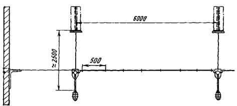
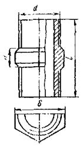
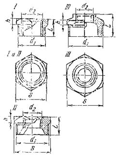
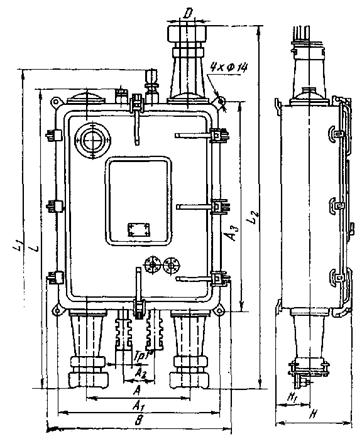
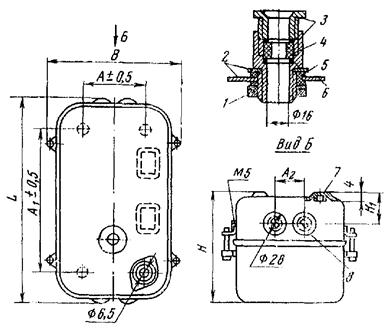
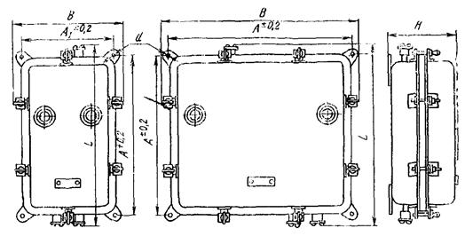

МИНИСТЕРСТВО
МОНТАЖНЫХ И СПЕЦИАЛЬНЫХ
СТРОИТЕЛЬНЫХ РАБОТ СССР
ИНСТРУКЦИЯ
ПО МОНТАЖУ ЭЛЕКТРООБОРУДОВАНИЯ
ПОЖАРООПАСНЫХ УСТАНОВОК
НАПРЯЖЕНИЕМ ДО 1000 В
ВСН 294-72
ММСС СССР
«ЭНЕРГИЯ» МОСКВА 1974
Инструкция содержит особенности выполнения электромонтажных работ в пожароопасных установках (помещениях и наружных) промышленных предприятий.
Инструкция разработана на основе Правил устройства электроустановок (изд. 4-е, 1965), СНиП III-И.6-67, гл. 6, действующих общесоюзных нормативных документов Госстроя СССР и директивных документов Минмонтажспецстроя СССР с учетом опыта монтажа электрооборудования пожароопасных установок в системе Главэлектромонтажа ММСС СССР, а также отдельных требований вновь разрабатываемых ПУЭ.
В Инструкции учтены все замечания по ее первой редакции.
Инструкция предназначена для инженерно-технических работников и рабочих-электромонтажников, занимающихся монтажом электрооборудования пожароопасных установок, и может быть использована при проектировании.
|
Минмонтажспецстрой СССР |
Ведомственные строительные нормы |
ВСН 294-72 ММСС СССР |
|
|
Инструкция по монтажу электрооборудования пожароопасных установок напряжением до 1 000 В |
|||
1-1. Инструкция разработана на основе требований ПУЭ, СНиП III-И.6-67 и других общесоюзных нормативных документов и распространяется на монтаж электрооборудования и электропроводок пожароопасных установок всех классов.
1-2. Работы по монтажу пожароопасных установок, являющихся одновременно и взрывоопасными, должны производиться в строгом соответствии с требованиями «Инструкции по монтажу электрооборудования взрывоопасных установок (в помещениях и наружных)» МСН 84-65/ММСС СССР.
1-3. При наличии химически активных сред должны быть предусмотрены меры от их коррозионного воздействия на электрооборудование и электропроводки пожароопасных установок.
1-4. Инструкция согласована с Госэнергонадзором и ГУПО МВД СССР.
Проектная документация на производство электромонтажных работ в пожароопасных установках (помещениях и наружных) должна выполняться в соответствии с «Временной инструкцией по разработке проектов и смет промышленного строительства» (СП 202-69).
|
Внесена ВНИИпроектэлектромонтажем |
Утверждена Мннмонтажспецстроем СССР |
Срок введения |
3-1. Для электропроводок рекомендуется применять провода и кабели (бронированные и небронированные) с алюминиевыми и медными жилами, оболочками и покровами из материалов, не поддерживающих горения.
3-2. Запрещается применять провода и кабели с полиэтиленовой изоляцией при любых оболочках и покровах.
3-3. Область применения проводов и кабелей по классам пожароопасных установок (в помещениях и наружных) указана в приложении 1.
3-4. Изоляция проводов и кабелей должна быть рассчитана на напряжение не ниже 660 В.
3-5. Для питания передвижных и переносных электроприемников следует применять шланговые кабели по ГОСТ 13497-68 (например, АКРПТН).
3-6. Соединительные и ответвительные коробки, используемые в электропроводках пожароопасных установок всех классов, должны иметь пыленепроницаемое исполнение. В помещениях класса П-I и П-IIа допускается применение коробок закрытого исполнения. Коробки могут быть из металла или другого прочного материала. В металлических коробках обязательно наличие внутри надежной изолирующей выкладки, например, из асбеста или электрокартона. Пластмассовые части должны быть изготовлены из жаро- или дугостойкой пластмассы.
Коробки, рекомендуемые для применения в электропроводках пожароопасных установок, перечислены в приложении 2.
3-7. В одной трубе, рукаве, коробе, пучке или лотке запрещается совместная прокладка цепей взаиморезервирующих; рабочего и аварийного освещения; освещения и силовых; осветительных напряжением 42 В с цепями напряжением 660 В. Совместная прокладка этих цепей допускается лишь в коробах со сплошными продольными перегородками из несгораемого или трудносгораемого материала.
3-8. В пожароопасных установках всех классов запрещаются:
а) монтаж электропроводок в полиэтиленовых, полипропиленовых, винипластовых и бумажно-металлических трубах;
б) применение плоских проводов АППВ, ППВ, АПН при открытой прокладке;
в) использование негерметичных металлорукавов с подвижным швом для выполнения вводов в токоприемники.
3-9. В пожароопасных установках для монтажа электропроводок следует применять стальные водогазопроводные (табл. 1), легкие и обыкновенные трубы по ГОСТ 3262-62, а также тонкостенные электросварные по ГОСТ 10704-63. Преимущественно следует применять легкие водогазопроводные и тонкостенные электросварные трубы.
3-10. Запрещается использовать в пожароопасных установках всех классов стальные трубы: усиленные водогазопроводные по ГОСТ 3262-62 и некондиционные.
Таблица 1
|
Трубы |
||||||||||
|
легкие |
обыкновенные |
тонкостенные электросварные |
||||||||
|
дюймы |
мм |
Наружный диаметр, мм |
Толщина стенки, мм |
Масса 1 м трубы, кг |
Наружный диаметр, мм |
Толщина стенки, мм |
Масса 1 м трубы, кг |
Наружный диаметр, мм |
Толщина стенки, мм |
Масса 1 м трубы, кг |
|
1/2 |
15 |
21,3 |
2,5 |
1,16 |
21,3 |
2,8 |
1,28 |
20,0 |
1,6 |
0,726 |
|
3/4 |
20 |
26,8 |
2,5 |
1,50 |
26,8 |
2,8 |
1,66 |
26,0 |
1,8 |
1,07 |
|
1 |
25 |
33,5 |
2,8 |
2,12 |
33,5 |
3,2 |
2,39 |
32,0 |
2,0 |
1,48 |
|
11/4 |
32 |
42,3 |
2,8 |
2,73 |
42,3 |
3,2 |
3,09 |
- |
- |
- |
|
11/2 |
40 |
48,0 |
3,0 |
3,33 |
48,0 |
3,5 |
3,84 |
47,0 |
2,0 |
2,22 |
|
2 |
50 |
60,0 |
3,0 |
4,22 |
60,0 |
3,5 |
4,88 |
59,0 |
- |
2,82 |
|
21/2 |
70 |
75,5 |
3,2 |
5,71 |
75,5 |
4,0 |
7,05 |
- |
- |
- |
|
3 |
80 |
88,5 |
3,5 |
7,31 |
88,5 |
4,0 |
8,34 |
- |
- |
- |
3-11. Внутренняя поверхность труб, применяемых для прокладки проводов и кабелей, должна быть гладкой (без выступов, зазубрин, ржавчины и т.п.), обеспечивающей протягивание проводов и кабелей без нарушения изоляции и оболочки.
3-12. При открытой прокладке трубы следует очищать от ржавчины и окрашивать внутри и снаружи; при скрытой прокладке очищать от ржавчины и окрашивать только внутри.
3-13. При открытой прокладке в помещениях с химически активной средой необходимо наносить внутри и снаружи труб антикоррозионное покрытие, предусмотренное проектом. Выбор покрытия следует производить в соответствии с требованиями, предъявляемыми к окраске металлических поверхностей и указанными в общемашиностроительных типовых руководящих материалах ОМТРМ 7312-010-70 Министерства станкоинструментальной и инструментальной промышленности.
3-14. Соединения труб между собой, с патрубками коробок, светильниками, с аппаратурой и вводными коробками электродвигателей необходимо выполнять на трубной цилиндрической, в том числе накатной резьбах (последняя - только для тонкостенных труб). Профиль и размеры резьбы должны соответствовать требованиям ГОСТ 6357-52.
3-15. Применять манжеты, а также сварку для соединения любых труб запрещается.
3-16. Неразъемные соединения труб (рис. 1, а) можно выполнять навертыванием муфты на конец одной трубы с короткой резьбой и ввертыванием в муфту другой трубы, имеющей конец с короткой резьбой. При разъемных соединениях (рис. 1, б) на конце одной трубы должна быть короткая резьба, а на конце другой - длинная. Сначала контргайку, а затем муфту навертывают на конец с длинной резьбой, после чего муфту навертывают на конец с короткой резьбой до конца последней, а контргайку привертывают вплотную к муфте. Размеры длинной и короткой резьбы на концах труб должны соответствовать данным табл. 2.
Рис. 1. Соединения труб.
1 - короткая резьба; 2 - муфта по ГОСТ 8966-59; 3 - пеньковое волокно, пропитанное суриком (по всей длине резьбы муфты); 4 - длинная резьба; 5 - контргайка по ГОСТ 8968-59.
Таблица 2
|
Длина резьбы, мм |
|||
|
дюймы |
мм |
длинной (ГОСТ 8979-59) |
короткий (длинная по ГОСТ 3262-62) |
|
1/2 |
15 |
50 |
14 |
|
3/4 |
20 |
54 |
16 |
|
1 |
25 |
62 |
18 |
|
11/4 |
32 |
68 |
20 |
|
11/2 |
40 |
75 |
22 |
|
2 |
50 |
86 |
24 |
|
21/2 |
70 |
98 |
27 |
|
3 |
80 |
106 |
30 |
3-17. Для соединения труб между собой, как правило, следует применять соединительные стальные прямые муфты по ГОСТ 8966-59 и контргайки по ГОСТ 8968-59. Допускается использование чугунных муфт по ГОСТ 8954-59.
3-18. Присоединения трубопроводов к электрическим машинам и аппаратам должны быть разъемными и допускать замену аппаратов и машин по возможности без демонтажа труб.
3-19. Резьбовые соединения труб и их присоединения к электрооборудованию следует выполнять с подмоткой на резьбу пенькового волокна, пропитанного разведенным на олифе суриком (железным или свинцовым), или с применением ленты ФУМ. Применять вместо сурика масляные краски и белила запрещается.
3-20. Открыто прокладываемые трубы электропроводки в пожароопасных установках всех классов и в особенности класса П-II и П-IIа следует располагать так, чтобы скопление легковоспламеняющейся пыли на трубах и конструкциях было наименьшим, а удаление ее не было затруднено. Для этого следует:
а) трубы прокладывать, как правило, в один ряд с зазорами между ними и стенами не менее 20 мм;
б) крепить трубы конструкциями с узкими горизонтальными поверхностями.
3-21. Количество соединительных и ответвительных коробок, устанавливаемых внутри пожароопасных помещений, должно быть по возможности минимальным.
Установка коробок в полу должна применяться в случаях крайней необходимости. Коробки при этом должны быть герметичными, выполненными из металла и имеющими дополнительную защиту от механических повреждений.
3-22. Соединение труб различных диаметров между собой или с вводными коробками электромашин, аппаратов и пр., имеющими диаметр вводного отверстия, отличный от диаметра вводимой трубы, следует выполнять футорками по ГОСТ 8960-59 (приложение 3).
3-23. Прокладывать трубы необходимо в соответствии с проектом. При вынужденных отступлениях от проекта длину открыто прокладываемых труб в помещениях следует по возможности сокращать за счет рационального выбора трасс. Все изменения должны быть согласованы с проектной организацией.
3-24. Открыто прокладываемые трубы электропроводки в пожароопасных установках класса П-I при совместной прокладке с технологическими трубопроводами, несущими легковоспламеняющиеся продукты, должны располагаться:
а) ниже трубопроводов, несущих горючие пары и газы легче воздуха;
б) выше трубопроводов, несущих пары и газы тяжелее воздуха.
3-25. Трубы электропроводок наружных установок класса П-III при прокладке на эстакадах совместно с технологическими трубопроводами, несущими легковоспламеняющиеся продукты, следует по возможности располагать с противоположной стороны от трубопроводов.
3-26. При всех видах прокладок труб электропроводки по эстакадам должны быть приняты меры, исключающие возможность попадания технологических продуктов на трубы электропроводки.
3-27. Скрытая прокладка труб заподлицо с поверхностью пола в пожароопасных помещениях всех классов запрещается. Трубы должны быть заглублены и защищены слоем цементного раствора толщиной не менее 20 мм.
3-28. Трубы электропроводки, прокладываемые на высоте менее 2,5 м над машинами, механизмами, транспортерами и т.п., следует жестко закреплять по всей длине; при этом расстояние между местами крепления для труб всех диаметров должно быть не более 2,5 м. В остальных случаях расстояние как на горизонтальных, так и на вертикальных участках не должно превышать 2,5; 3 и 4 м для труб диаметром 3/4-11/2; 2" и более.
3-29. Крепление труб электропроводки в помещениях и наружных установках необходимо выполнять хомутами и скобами СД, СО и СДП, выпускаемыми заводами Главэлектромонтажа.
Крепление трубопроводов без скоб приваркой к металлическим конструкциям, фермам и пр., а также крепление их к технологическим трубопроводам запрещается.
Примечание. При необходимости допускается применение электромонтажных изделий других заводов и организаций.
3-30. Провода в вертикально проложенных трубах (стояки) должны быть закреплены. Расстояния между точками крепления не должны превышать 30, 20 и 15 м для проводов сечением соответственно 50, 70-150 и 185-240 мм2.
Закрепление проводов должно быть выполнено при помощи клиц или зажимов, устанавливаемых как на концах труб, так и в промежуточных коробках. Клицы и зажимы должны быть изготовлены из изолирующих материалов, в противном случае на провода в месте крепления следует накладывать изоляционные прокладки.
3-31. В местах пересечений труб электропроводки с температурными и осадочными швами должны быть предусмотрены компенсирующие устройства.
3-32. Цвет окраски открыто прокладываемых труб электропроводки должен отличаться от цвета окраски технологических трубопроводов.
3-33. Для выполнения силовых и осветительных сетей в пожароопасных установках всех классов для прокладки в трубах могут быть применены кабели и провода с резиновой или поливинилхлоридной изоляцией (например, АПРТО, АВРГ и др.), их марки должны быть указаны в проекте (приложение 1).
Сечения проводов и кабелей с алюминиевыми и медными жилами, прокладываемых в стальных трубах, для пожароопасных установок всех классов должны быть не менее указанных в табл. 3.
Таблица 3
|
Сечение жил, мм2 |
||
|
алюминиевых |
медных |
|
|
Осветительные сети |
2,5 |
1,50 |
|
Зарядка светильников |
- |
0,75 |
|
Силовые сети |
2,5 |
1,50 |
|
Вторичные цепи трансформаторов тока |
4,0 |
2,50 |
|
Цепи управления, сигнализации, измерения, блокировки |
2,5 |
1,50 |
3-34. В помещениях влажных, сырых, особо сырых, жарких, пыльных и с химически активными средами концы труб, не введенные в коробки, аппараты и т.п., необходимо уплотнять вокруг проводов на длине 50 мм уплотнительным составом УС-65 или ему равноценным.
3-35. Заделка проходов труб сквозь стены и перекрытия может быть выполнена в соответствии с техническим циркуляром Главэлектромонтажа Минмонтажспецстроя СССР № 9-2-63/68 от 25 октября 1968 г. следующими негорючими легкопробиваемыми растворами:
а) цементом марки 300-500 (ГОСТ 10178-62) с песком (ГОСТ 8736-67) 1:10;
б) глиной с цементом марки 300-500 (ГОСТ 10178-62) и песком (ГОСТ 8736-67) 1,5:1:11;
в) глиной с песком 1:3;
г) перлитом вспученным (ГОСТ 10832-64) со строительным гипсом (ГОСТ 125-70) 1:2.
3-36. Провода в пожароопасных установках допускается прокладывать в коробах, на изоляторах и лотках (приложение 1).
3-37. В пожароопасных помещениях над местами нахождения сгораемых веществ и предметов расстояние между изоляторами вдоль линии должно быть меньше высоты расположения проводки над сгораемыми веществами и предметами.
В пожароопасных помещениях допускается прокладка проводов АПР на изоляторах только в местах, удаленных от горючих материалов, и где невозможны механические повреждения проводов.
3-38. При пересечении друг с другом незащищенных изолированных проводов, проложенных на изолированных опорах с расстоянием, меньшим предусмотренного СНиП (см. табл. 6-4 III-И.6-67) для наибольшего сечения пересекающихся проводов, на один из них должен быть надет и закреплен отрезок неразрезной изоляционной трубки. При пересечении защищенных изолированных проводов с незащищенными указанные меры защиты следует принимать, если расстояние между проводами составит менее 10 мм.
3-39. Прокладку кабелей в установках всех классов рекомендуется выполнять по строительным основаниям и элементам, колоннам, фермам, на конструкциях, в коробах и лотках, на тросах, эстакадах (приложение 1). При проходе кабелей через температурные и осадочные швы следует предусматривать компенсацию для кабелей за счет их свободного провеса без крепления по обе стороны шва.
3-40. Транзитная прокладка проводов и кабелей через пожароопасные помещения всех классов не рекомендуется. При необходимости прокладку проводов и кабелей следует выполнять только в металлических трубах.
Транзитная прокладка через складские помещения запрещается.
3-41. При открытой прокладке кабеля должна предусматриваться его защита: в наружных установках - от действия солнечной радиации, в помещениях - от излучения различных источников тепла.
3-42. В пожароопасных установках всех классов установка на кабелях соединительных муфт запрещается.
3-43. При совместной прокладке кабелей с технологическими трубопроводами, несущими горючие продукты, в помещениях класса П-I следует руководствоваться требованиями п. 3-24 настоящей инструкции.
3-44. При прокладке бронированных и небронированных кабелей на эстакадах в наружных установках класса П-III (рис. 2) следует руководствоваться требованиями пп. 3-25 и 3-26 настоящей инструкции.
3-45. Допускается обход кабелями различных трубопроводов в любом направлении в зависимости от местных условий. При этом кабели, проложенные в непосредственной близости от технологических трубопроводов, а также места возможного механического повреждения кабелей должны быть защищены коробами, угловой сталью, трубками и т.п. (рис. 2). Конструкции для защиты кабелей от механических повреждений должны быть прикреплены к строительным элементам зданий или сооружений.
3-46. При открытых прокладках бронированных кабелей в пожароопасных установках всех классов необходимо снимать джутовый покров с кабеля.
3-47. Броня кабеля и все металлические узлы и детали (кабельные конструкции, элементы крепления и т.п.) должны быть окрашены негорючими эмалями и красками; во влажных, сырых, особо сырых, а также в помещениях с химически активной средой следует предусматривать нанесение негорючих антикоррозионных покрытий, руководствуясь при этом требованиями п. 3-13 настоящей инструкции.
Рис. 2. Расстояние между параллельно проложенными кабелями и трубопроводами (а) и между кабелями и трубопроводами при их пересечении (б).
1 - трубопровод; 2 - кабели; 3 - ограждение из листовой стали (на всем участке сближения с трубопроводом плюс 500 мм с каждой стороны).
3-48. Покровы небронированных кабелей, а также различные узлы и детали конструкций из пластикатов окраске не подлежат.
3-49. Проходы бронированных и небронированных кабелей, а также защищенных и незащищенных проводов сквозь сгораемые и несгораемые стены и междуэтажные перекрытия следует выполнять в отрезках стальных труб (рис. 3). При проходе проводов и кабелей в помещения с другой средой или наружу концы труб должны быть уплотнены в соответствии с требованиями пп. 3-34 и 3-35.
Рис. 3. Проходы проводов и кабелей сквозь стены и перекрытия в пожароопасных помещениях.
а - горизонтальная прокладка; б - вертикальная прокладка; 1 - отрезок стальной или асбестоцементной трубы; 2 - заделка легкопробиваемая растворами; 3 - провод или кабель; 4 - заделка поливинилхлоридной лентой.
3-50. При прокладке на изоляторах в местах прохода сквозь стены и перекрытия провода должны быть дополнительно изолированы (например, обмоткой поливинилхлоридной лентой, трубкой ХВТ или другим изоляционным материалом, не поддерживающим горение), дополнительная изоляция провода внутри трубы должна выходить за пределы трубы на 20-30 мм (рис. 3, б).
3-51. При всех случаях прохода проводов или одножильных кабелей сквозь стены из одного пожароопасного помещения в другое, а также наружу каждый проводник рекомендуется прокладывать в отдельной трубе; ток в проводниках не должен превышать 25 А. При больших токах рекомендуется прокладка в неметаллических трубах, например в асбестоцементных.
3-52. Концы стальных труб, применяемых для прохода проводов и кабелей, должны быть очищены от заусенцев, раззенкованы и оконцованы пластмассовыми втулками.
3-53. Для предотвращения скопления конденсата и распространения пламени в месте прохода сквозь стены и перекрытия следует заделать зазоры между проводами или кабелями и трубой легкопробиваемым составом из несгораемых материалов в соответствии с требованиями п. 3-35.
3-54. В коробах и на лотках провода и кабели необходимо прокладывать в один ряд с расстоянием между ними в свету около 5 мм.
3-55. Допускается прокладка проводников пучками в один ряд с числом проводников в пучке не более 12 и расстоянием между пучками в свету не менее 20 мм; пучки должны быть скреплены (обоймами, бандажами и т.п.).
3-56. При прокладке проводов и кабелей пучками нагрузки на проводники должны приниматься по табл. I-3-3 и I-3-4 ПУЭ, как для проводников, проложенных открыто (в воздухе), с введением снижающих коэффициентов: 0,68 для 5-6 проводников; 0,63 для 7-9 и 0,6 для 10-12 проводников.
3-57. Расстояние между точками крепления проводов и кабелей на лотках должно составлять: при вертикальном расположении лотков не более 0,5 м, при горизонтальном - не более 3 м.
3-58. Закреплять провода и кабели, прокладываемые в коробах, необходимо в тех случаях, когда последние расположены вертикально или крышкой вниз. Расстояние между точками крепления при этом не должно превышать 0,5 м.
3-59. Прокладываемые на лотках или в коробах кабели и провода должны быть также закреплены на поворотах и в местах ответвлений.
3-60. Кабели, прокладываемые в коробах и на лотках, должны иметь маркировку.
3-61. В пожароопасных помещениях классов П-I и П-II соединения коробов должны быть уплотнены.
3-62. Соединяемые секции коробов и лотков должны образовывать непрерывную электрическую цепь по всей длине.
3-63. Тросовые электропроводки могут быть применены для монтажа силовых и осветительных кабельных линий напряжением до 400 В в пожароопасных установках всех классов за исключением наружных. Кабели должны быть удалены от мест скопления горючих материалов и не должны быть подвержены механическим воздействиям (например, проложены на недоступной высоте).
3-64. Тросовые электропроводки рекомендуются преимущественно для осветительных линий.
3-65. Для тросовых проводок могут быть использованы небронированные кабели (приложение 1) в поливинилхлоридной, наиритовой или алюминиевой оболочках с резиновой или поливинилхлоридной изоляцией алюминиевых или медных жил общим диаметром не более 14 мм.
3-66. В качестве несущих тросов для монтажа электропроводок открыто проложенным кабелем следует применять: стальную катанку диаметром не менее 6 мм по ГОСТ 14085-68, стальную проволоку для ВЛ по ГОСТ 5800-51, стальные тросы-канаты по ГОСТ 3062-69 диаметром не менее 5 мм.
3-67. Несущий трос должен быть защищен негорючим антикоррозионным покрытием (краской ПХВО или негорючим пластикатом, например, поливинилхлоридом), химически стойким к окружающей среде.
3-68. Концевые крепления тросов к строительным элементам зданий следует осуществлять с помощью тросовых анкеров и натяжных муфт (рис. 4).
3-69. Несущий трос предназначен для крепления кабелей, коробок и светильников. В целях его разгрузки и уменьшения стрелы провеса следует применять различные разгрузочные устройства, например, вертикальные проволочные подвески, которые верхними концами прикрепляют к потолочным конструкциям или фермам с помощью серег, крюков, хомутиков или закрепов-подвесок (рис. 4).
Рис. 4. Анкерное крепление троса.
1 - уплотнение цементным раствором; 2 - анкер тросовый К300; 3 - муфта натяжная К679; 4 - коуш; 5 - зажим тросовый К299; 6 - конец троса для присоединения к магистрали заземления; 7 - канат (трос) по ГОСТ 3062-69.
Точки крепления к тросу вертикальной проволочной подвески и подвески светильника могут не совпадать.
3-70. Концевое крепление троса к анкеру или натяжному устройству должно быть выполнено с помощью тросового зажима и стальной обоймы коуша (рис. 4).
3-71. Стрела провеса в пролетах между креплениями должна быть не менее 1/60 длины пролета. Например, при длине пролета 6 м она должна быть 100-150 мм.
При наибольшем усилии напряжение не должно превышать 0,7 усилия, допускаемого для данного троса (табл. 4), в которой приведены технические характеристики катанки стальной проволоки и др., применяемых в качестве несущих тросов).
3-72. Сращивание тросов в пролете между концевыми креплениями не допускается.
Несущий трос в помещениях длиной более 50 м может быть составным, причем каждый трос должен иметь самостоятельные анкерные и натяжные устройства, которые внутри пролета крепятся на балках, фермах или колоннах стяжными болтами или хомутами.
Концы составных тросов должны быть соединены сваркой для создания непрерывности цепи заземления. Соединение троса не должно нести механических нагрузок.
3-73. Концевые анкерные устройства следует крепить сквозными болтами, заделанными цементом к допускающим горизонтальную нагрузку строительным элементам здания.
3-74. На промежуточных опорах трос должен иметь крепление, исключающее поперечное смещение относительно опоры.
3-75. К несущим тросам кабели должны прикрепляться полосками из поливинилхлоридного или другого пластиката, не поддерживающего горения. Допускается применение оцинкованных металлических полосок с подкладками.
3-76. Расстояние между точками крепления кабеля к тросу не должно превышать 0,5 м.
3-77. Кабели, закрепляемые на тросах, в местах перехода их на стены и другие элементы зданий не должны иметь механических напряжений.
Рис. 5. Крепление светильников к металлической ферме.
Таблица 4
|
Диаметр сечения, мм |
Сечение, мм2 |
Предел прочности, кгс/мм2 |
Допустимая нагрузка, кгс |
Допустимая нагрузка с коэффициентом запаса 3, кгс |
Максимально допустимое усилие натяжения при к=0,7, кгс |
|
|
Катанка по ГОСТ 14085-68 (сортамент 2590-57) |
6,00 |
28,27 |
Не менее 40 |
1130,8 |
377,0 |
263,9 |
|
6,30 |
31,17 |
1246,8 |
416,0 |
291,2 |
||
|
7,00 |
34,48 |
1539,2 |
513,0 |
359,1 |
||
|
8,00 |
50,27 |
2010,8 |
670,2 |
469,1 |
||
|
Канат стальной ЛК-0 по ГОСТ 3062-69 |
5,20 |
16,16 |
Не менее 140 |
2080,0 |
693,3 |
485,3 |
|
5,50 |
18,10 |
2330,0 |
776,7 |
543,7 |
||
|
6,10 |
22,31 |
2870,0 |
956,7 |
669,7 |
||
|
6,70 |
26,96 |
3470,0 |
1156,7 |
809,7 |
||
|
7,30 |
32,05 |
4125,0 |
1375,0 |
962,5 |
||
|
Проволока стальная для ВЛ по ГОСТ 5800-51 |
6,80 |
24,60 |
Не менее 65 |
1599,0 |
533,0 |
373,1 |
|
7,50 |
35,40 |
2236,0 |
745,0 |
521,5 |

Рис. 6. Подвод питания к светильникам при тросовой прокладке кабелей ниже нижнего пояса фермы.
Рис. 7. Подвод питания к светильникам при прокладке кабелей по нижнему поясу фермы.
3-78. Жилы кабелей необходимо соединять только в пыленепроницаемых коробках, например У409, выпускаемых по ТУ 16-536.249-71.
3-79. Места соединений жил кабелей должны быть изолированы тремя-четырьмя слоями липкой поливинилхлоридной ленты.
3-80. Запрещается применять полиэтиленовые колпачки для изоляции жил в местах их соединений и ответвлений.
3-81. Вводимые в ответвительную коробку кабели должны быть уплотнены ввертыванием сальниковой гайки до отказа. Надежность уплотнения проверяют легким подергиванием кабеля.
В случае повреждения перепонки в неиспользованных рожках коробки У409 следует закрыть отверстия в них металлическими или пластмассовыми заглушками толщиной 1,2 мм, подложив их под резиновые уплотнительные кольца.
3-82. На рис. 5-7 показаны варианты подвода питания к светильникам; точки крепления подвесов светильника и вертикальной подвески троса совпадают.
4-1. Область применения способов оконцевания, соединения и ответвления жил проводов и кабелей приведена в табл. 1 и 2 «Инструкции по оконцеванию и соединению алюминиевых и медных жил изолированных проводов и кабелей» МСН 139-67/ММСС СССР, которой следует руководствоваться при оконцевании, соединении и ответвлении жил проводов и кабелей.
4-2. Для оконцевания проводов и кабелей следует применять:
а) при опрессовке алюминиевых жил - трубчатые алюминиевые наконечники ТА и трубчатые медно-алюминиевые ТАМ (ГОСТ 9581-68), медных жил - медные трубчатые наконечники Т (ГОСТ 7386-70);
б) при электросварке, газовой сварке и пайке алюминиевых жил - алюминиевые литые наконечники ЛА (ГОСТ 7387-55);
в) при пайке медных жил - медные штампованные наконечники П.
4-3. Непосредственное присоединение проводов и кабелей с алюминиевыми жилами и наконечников из алюминия к зажимам машин, аппаратов и т.п. может выполняться только при наличии у них зажимов, специально для этого предназначенных.
При отсутствии специальных зажимов провода и кабели должны быть присоединены: однопроволочные сечением до 10 мм2 включительно - изгибанием жилы в кольцо с помощью ограничивающей шайбы-звездочки и пружинной шайбы по ГОСТ 6402-70 с предварительными зачисткой жилы, полудкой и покрытием ее кварцевазелиновой пастой; однопроволочные сечением более 10 мм2 и многопроволочные - медноалюминиевыми наконечниками, закрепляемыми опрессовкой.
4-4. Изолирование мест соединения и оконцевания проводников следует производить липкой лентой ПВХ. Допускается применять лакоткань с последующим наложением на нее прорезиненной ленты и покрытием изоляционным лаком или эмалью.
4-5. В пожароопасных установках всех классов запрещается применять:
холодную скрутку жил проводов и кабелей без горячей пайки;
легкоплавкие припои (сплавы висмут-олово-свинец-кадмий);
сжимы в пластмассовых корпусах всех типов (У730м-У872) для выполнения ответвлений от магистральных алюминиевых и медных проводов.
5-1. Стационарно установленные электродвигатели как с искрящими, так и с неискрящими частями, по условиям работы в соответствии с ПУЭ должны иметь следующие исполнения:
а) в помещениях класса П-I - брызгозащищенное, закрытое, закрытое обдуваемое или продуваемое. Если контактные кольца машин находятся вне их оболочки, то они должны быть заключены в колпаки закрытого исполнения;
б) в помещениях класса П-II - закрытое, закрытое обдуваемое или продуваемое, продуваемое с замкнутым циклом охлаждения, а также продуваемое с подводом охлаждающего воздуха извне и выбросом отработанного воздуха в помещение. Если контактные кольца машин находятся вне их оболочки, то эти кольца должны быть заключены в пыленепроницаемые колпаки;
в) в помещениях класса П-IIа - защищенное. Если контактные кольца машин находятся вне их оболочки, то они должны быть заключены в колпаки защищенного исполнения;
г) в наружных установках класса П-III - закрытое или закрытое обдуваемое. Если контактные кольца машин находятся вне их оболочки, то они должны быть заключены в колпаки закрытого исполнения.
5-2. Передвижные электрические машины, а также машины, являющиеся частью передвижных установок, должны иметь в помещениях всех классов и наружных установках закрытое или закрытое обдуваемое исполнение.
Рис. 8. Пример подвода проводов и кабелей в стальных трубах к электродвигателям АО2.
а - прямой подвод; б - подвод с поворотом коробки; в - подводящая труба 25 мм; г - подводящая труба 40 мм; 1 - коробка выводов двигателя; 2 - длинная резьба; 3 - короткая резьба; 4 - подводящая трубa; 5 - контргайка; 6 - муфта; 7 - труба стальная; 8 - ниппель двойной; 9 - футорка.
5-3. Электрифицированный переносный инструмент в пожароопасных установках всех классов должен иметь закрытое исполнение; допускается применение инструмента защищенного исполнения.
5-4. Электрические машины с частями, нормально искрящими по условиям работы (электродвигатели с контактными кольцами), должны быть удалены от мест скопления горючих веществ на расстояние не менее 1 м или отделены несгораемым экраном.
5-5. Монтаж электродвигателей в пожароопасных установках всех классов не отличается от монтажа электродвигателей в нормальных помещениях за исключением уплотнения вводных устройств:
а) вводные устройства электродвигателей должны иметь исполнение, соответствующее оболочке электродвигателя;
б) в помещениях класса П-II вводы проводов и кабелей, а также вводные коробки электродвигателей должны быть непроницаемы для пыли;
в) вводы труб в вводные устройства электродвигателей должны быть выполнены с применением стандартных элементов; трубы следует надежно закреплять в вводных коробках. Примеры подвода проводов и кабелей в трубах к вводной коробке электродвигателей АО2 приведены на рис. 8, расположения коробок выводов на двигателях АО2 1-9-го габаритов - на рис. 9.
Таблица 5
|
Наружный диаметр, мм |
Внутренний диаметр резинотканевых рукавов, мм, для |
|||
|
труб |
муфт |
труб |
муфт |
|
|
15 |
21,3 |
29,0 |
18 |
32 |
|
20 |
26,8 |
34,4 |
25 |
32 |
|
25 |
33,5 |
43,3 |
32 |
- |
|
32 |
42,3 |
51,9 |
- |
50 |
|
40 |
48,0 |
57,8 |
50 |
- |
|
50 |
60,0 |
70,6 |
65 |
75 |
|
70 |
75,5 |
87,2 |
75 |
- |
|
80 |
88,5 |
99,9 |
- |
100 |
Примечания: 1. Типы рукавов для различных сред имеют обозначения:
Б - для бензина, керосина, нефти и минеральных масел;
В - для воды и слабых растворов неорганических кислот и щелочей концентрацией до 20 %;
ВГ - для горячей воды с температурой до 100 ºС;
Г - для газов, воздуха, кислорода, ацетилена, углекислоты, азота и др.;
П - для пищевых веществ; спирта, вина, пива, молока, слабокислых органических и других веществ;
Ш - для подачи слабощелочных и слабокислых водных растворов при штукатурных работах и песка от пескоструйных аппаратов.
2. Пример условного обозначения бензостойких рукавов для давления 1,5 кгс/см2 с внутренним диаметром 25 мм; рукав Б-1,5 Ø 25 ГОСТ 8318-57.
5-6. В помещениях всех классов и наружных установках рекомендуется выполнять ввод проводов и кабелей в вводные коробки электродвигателей в резинотканевых рукавах по ГОСТ 8318-57 (табл. 5), которые должны быть стойкими к окружающей среде.
Рис. 9. Расположение коробки выводов на двигателях АО2.
а - 1-5-го габаритов; б - 6-9-го габаритов.
|
Габарит двигателя |
Размеры, мм |
Номер рисунка |
|||||||||
|
А |
A1 |
А2 |
В |
В1 |
В2 |
h |
d |
α |
М |
||
|
1 |
120 |
108 |
97 |
30 |
23 |
76 |
90 |
3/4 " |
12° |
55 |
9, а |
|
2 |
130 |
118 |
107 |
25 |
80 |
100 |
|||||
|
3 |
135 |
123 |
111 |
26 |
82 |
112 |
|||||
|
4 |
170 |
155 |
140 |
35 |
33 |
102 |
132 |
1 " |
70 |
||
|
5 |
190 |
173 |
157 |
40 |
37 |
115 |
160 |
80 |
|||
|
6 |
230 |
215 |
200 |
90 |
28 |
145 |
180 |
11/4 " |
7,5° |
120 |
9, б |
|
7 |
265 |
250 |
255 |
33 |
156 |
200 |
|||||
|
8 |
320 |
290 |
260 |
95 |
56 |
207 |
250 |
2 " |
11° |
150 |
|
|
9 |
360 |
330 |
300 |
90 |
64 |
218 |
280 |
21/2 " |
|||
Примечание. Коробка выводов у двигателей 1-5 габаритов может быть повернута на угол, кратный 45°, а у двигателей 6-9 габаритов - на угол, кратный 90°.
5-7. Вариант подвода проводов и кабелей к вводной коробке электродвигателей серии АО2 в резинотканевом рукаве приведен на рис. 10.
Рис. 10. Исполнение подводов проводов и кабелей к электродвигателям АО2 в резинотканевых рукавах.
а - присоединение к трубопроводу заземляющего проводника с помощью хомута; б - подводящая труба 25 мм; в - подводящая труба 40 мм; 1 - коробка выводов двигателя; 2 - муфта; 3 - рукав резинотканевый; 4 - длинная резьба; 5 - подводящая труба; 6 - контргайка; 7 - патрубок; 8 - футорка; 9 - трубопровод.
6-1. Стационарно устанавливаемая в пожароопасных установках пусковая аппаратура, искрящая по условиям работы, должна иметь в соответствии с ПУЭ следующие исполнения:
а) в помещениях класса П-I - пыленепроницаемое или маслонаполненное;
б) в помещениях класса П-II - пыленепроницаемое;
в) в складских помещениях класса П-IIа - пыленепроницаемое или маслонаполненное;
г) в производственных помещениях класса П-IIа - закрытое;
д) в наружных установках класса П-III - закрытое.
6-2. Пусковая аппаратура, не искрящая по условиям работы, стационарно устанавливаемая в пожароопасных установках всех классов, должна иметь закрытое исполнение.
6-3. В пожароопасных установках всех классов допускается применение пусковых аппаратов в открытом и защищенном исполнениях при установке их в шкафах закрытого (уплотненного) исполнения.
6-4. Запрещается применять пусковые аппараты в маслонаполненном исполнении в помещениях с кислородными установками.
6-5. Для отключения всех электроприемников, расположенных в запираемых складских помещениях, содержащих горючие материалы или материалы в сгораемой упаковке, вне склада следует устанавливать общий аппарат управления независимо от наличия таких аппаратов внутри склада. Аппарат управления должен устанавливаться на несгораемой стене в специальном несгораемом ящике с приспособлением для пломбирования. При отсутствии несгораемых стен аппарат управления необходимо устанавливать на отдельной опоре.
6-6. В пожароопасных установках всех классов в качестве пусковой аппаратуры рекомендуется применять магнитные пускатели (пыленепроницаемые ПМП, пылебрызгонепроницаемые ПМЕ, пылезащищенные и пылебрызгонепроницаемые ПА), а также кнопки водозащищенного исполнения КУ-123.
Рис. 11. Варианты установки пускателей ПА в пылеводонепроницаемом исполнении.
а - на стене; б - на стойках; 1 - муфта; 2 - профиль; 3 - пускатель; 4 - дюбель; 5 - болт (гайка, шайба); 6 - стойка.
Габаритные и установочные размеры отдельных типов магнитных пускателей ПМП, ПМЕ и ПА приведены в приложении 4.
Варианты установки пускателей ПА и кнопок КУ-123 на стойках и на стене приведены на рис. 11, 12.
6-7. Перед монтажом пускателей следует проверить их исправность. Для этого необходимо снять крышку кожуха; протереть полюсы магнитной системы; проверить рабочий ход подвижной части якоря (якорь должен свободно возвращаться в исходное положение) наличие всех деталей контактора, надежность работы блокировочного механизма у реверсивного пускателя и блок-контактов нулевой защиты; замерить сопротивление изоляции, просушить изоляцию пускателя, если сопротивление менее 1 мОм, а также проверить затяжку всех винтов и контргаек.
6-8. Аппаратуру следует устанавливать и крепить на монтажных профилях К101, К106, К108, К110, К200, К202, К225, К235, К236, К238-К240, К347 и на стойках К305 (СА1), К310м (СА2), выпускаемых заводами Главэлектромонтажа.
Рис. 12. Варианты установки кнопок управления КУ-123.
а - на стене; б - на стойках; 1 - профиль; 2 - кнопка управления; 3 - дюбель; 4 - болт, гайка, шайба; 5 - футорка; 6 - стойка.
6-9. При креплении аппаратуры к профилям К101, К108, К110 следует использовать закладные гайки.
6-10. Аппаратуру следует устанавливать на высоте, доступной для обслуживающего ее персонала.
6-11. Основание, на которых устанавливаются аппараты, не должны подвергаться вибрации и сотрясениям.
6-12. Крепление металлоконструкций к стенам и основаниям рекомендуется выполнять дюбелями, болтами, штырями или дюбель-гвоздями.
6-13. После установки пускателя на металлоконструкции необходимо проверить отклонение его от вертикали (оно не должно превышать 5°); подвести провода силовой цепи и цепи управления (сечения проводников не должны превышать сечений, указанных в паспорте пускателя); установить уставки на соответствующие ступени; проверить правильность собранной схемы включением вхолостую несколько раз; убедиться в четкости работы пускателя; надеть и завернуть крышку, проверив надежность уплотнений; заземлить пускатель.
7-1. Светильники, установленные стационарно в пожароопасных помещениях и наружных установках всех классов, должны иметь следующие исполнения:
а) в помещениях класса П-I - полностью пылезащищенное или полностью пыленепроницаемое (степень защиты от окружающей среды соответственно 1Р54 и 1Р65);
б) в помещениях класса П-II - полностью пылезащищенное или полностью пыленепроницаемое в зависимости от количества, размера и характера пыли или волокон (степень защиты от окружающей среды соответственно 1Р54 и 1Р65);
в) в помещениях класса П-IIа - защищенное;
г) в наружных установках П-III - закрытое или влагозащищенное.
Для помещений класса П-II с общеобменной вентиляцией и местным нижним отсосом отходов допускаются защищенные или открытые исполнения.
Примечание. Исполнения светильников, применяемых в пожароопасных установках, приведены в соответствии с изменениями, внесенными постановлением Госстроя СССР № 95 от 7 августа 1969 г. в «Указания по проектированию электрического освещения производственных зданий» (СП 203-62), согласованными с ГУПО МВД СССР.
7-2. Области применения светильников по классам пожароопасных установок приведены в табл. 6.
Характеристика и назначение основных типов выпускаемых в настоящее время светильников, рекомендуемых для использования в пожароопасных установках, приведены в приложении 5.
7-3. При монтаже электропроводок в трубах светильники рекомендуется устанавливать одновременно с прокладкой трубопроводов питающей сети.
7-4. Конструкция светильников всех родов, устанавливаемых в складских пожароопасных помещениях, должна исключать возможность выпадания колб и баллонов ламп.
7-5. Конструкция светильников с люминесцентными лампами должна предусматривать размещение пускорегулирующих аппаратов и стартеров в отдельной полости, выполненной из несгораемых материалов, и предотвращение выпадания стартеров и ламп.
7-6. Мощность ламп в светильниках не должна превышать предельно допустимую.
7-7. Переносные светильники, применяемые в пожароопасных установках всех классов, должны иметь закрытое исполнение, кроме того, защитный колпак (из стекла или других материалов) должен быть защищен металлической сеткой.
7-8. В складских пожароопасных помещениях необходимо устанавливать только защищенные светильники, светильники с лампами накаливания должны иметь сплошной колпак из силикатного стекла, а светильники с лампами ДРЛ - металлическую сетку, препятствующую выпаданию ламп.
7-9. В складских пожароопасных помещениях классов П-I, П-II и П-IIа для люминесцентных ламп следует применять бесстартерную схему включения.
Таблица 6
Применение светильников по классам пожароопасных установок
|
Исполнение по ПУЭ |
Светильники, рекомендуемые для различных помещений |
||||||
|
производственных и складских |
производственных |
складских |
|||||
|
Тип |
Исполнение |
Тип |
Исполнение |
Тип |
Исполнение |
||
|
П-I |
Полностью пылезащищенное или пыленепроницаемое |
ППР-100, 200; ППД-100, 200, 500; ППД2-500; УП-24 (500 Вт); ПСХ-75; ПНП-2×100; ВПлН-2×100; ВПлД-100; ПГТ-100; ППДДРЛ-125, 250; ППД2ДРЛ-250 |
Полностью пыленепроницаемое |
ПВЛМ-2×40-01, 2×40-03, 2×80-01, 2×80-03; ПВЛ 1-2×40; ПВЛП-2×40; ПЛУ-4×40, 3×80Б, 4×80; ВЛВ-3×80Б, 4×80Б; |
Частично пылезащищенное |
ПВЛМ-2×40-01, 2×40-03, 2×80-01, 2×80-03 |
Частично пылезащищенное |
|
ВЛН-3×80, 4×80; УВЛВ-4×80-1; УВЛН-4×80-1; ВКЛ-4×80Б; ВЛКН-2×40Б |
Полностью пылезащищенное |
||||||
|
П-II |
Полностью пылезащищенное или пыленепроницаемое |
- |
- |
ППР-100, 200; ППД-100, 200, 500; ППД2-500, УП-24 (500 Вт); ПСХ-75; ПНП-2×100; СПБ-300; ВПлН-2×100; СОО-200; ВПлД-100; ПГТ-100; ППДДРЛ-125; 250; ППД2ДРЛ-250 |
Полностью пыленепроницаемое |
ПВЛМ-2×40-01, 2×40-03, 2×80-01, 2×80-03 |
Частично пылезащищенное |
|
ПВЛМ-2×40-01, 2×40-03, 2×80-01, 2×80-03 |
Частично пылезащищенное |
||||||
|
ПВЛ-1-2×40; ПВЛП-2×40; ПЛУ-4×40, 3×80Б, 4×80; ВЛВ-3×80Б, 4×80Б; ВЛН-3×80; УВЛН-4×80-1; ВЛК-4×80Б; ВЛКН-2×40Б; СЗЛ-300, 500, 1000; НСПО2 |
Полностью пылезащищенное |
||||||
|
П-II с общей вентиляцией и местным нижним отсосом отходов и П-IIа |
Допускается защищенное или открытое |
- |
- |
ППР-100, 200; ППД-100, 200, 500; ППД2-500, УП-24 (500 Вт); ПСХ-75; ПНП-2×100; ВПлН-2×100; ВПлД-100; ПГТ-100; ППДДРЛ-125, 250 |
Полностью пыленепроницаемое |
СЗЛ-300, 500, 1000 |
Полностью пылезащищенное |
|
ПВЛМ-2×41-01, 2×40-03, 2×80-01, 2×80-03 |
Частично пылезащищенное |
ППР-100; 200; ППД-100, 200, 500; ППД2-500; УП-24 (500 Вт); ПСХ-75; ПНП-2×100; ВПлН-2×100; ВПлД-100; ПГТ-100; ППДДРЛ-125, 250; ППД2ДРЛ-250 |
Полностью пыленепроницаемое |
||||
|
ПВЛ1-2×40; ПВЛП-2×40; ПЛУ-4×40, 4×80Б, 4×80; СЗЛ-300, 500, 1000; НСПО2; ВЛК-4×80Б; ВЛКН-2×40Б; ПУ-200 |
Полностью пылезащищенное |
ПВлМ-2×40-01, 2×40-03, 2×80-01, 2×80-03 |
Частично пылезащищенное |
||||
|
УВЛВ-4×80-2; УВЛН-4×80-2 |
Незащищенное перекрытое |
||||||
|
УВЛВ-4×80-3; УВЛВ-4×80-4; УВЛН-4×80-3; УВЛН-4×80-4 |
Незащищенное открытое |
||||||
|
П-III |
Закрытое или влагозащищенное |
СЗЛ-300, 500, 1000 |
Полностью пылезащищенное |
- |
- |
- |
- |
7-10. В складских пожароопасных помещениях всех классов применение светильников с рассеивателями и отражателями из сгораемых и трудносгораемых материалов запрещается.
7-11. Для подключения патронов светильников, не имеющих универсальных встроенных штепсельных соединений (например, РН, СХ и т.д.), рекомендуется использовать провода с термостойкой изоляцией (например, ПРКС, ПРБС и т.д.).
Марки проводов для зарядки светильников должны быть указаны в проекте, а длина определяется расстоянием от светильника до ближайшей ответвительной коробки плюс 100 мм, необходимых для соединения в коробке, и 80-150 мм (в зависимости от типа светильника) - для подсоединения к контактным зажимам патрона.
7-12. Светильники с универсальными встроенными штепсельными соединениями, например ППД (ППР), СЗЛ, поставляются с патронами, заряженными проводами ПРКС на заводе; для подключения светильника необходимо подвести питающий провод или кабель (например, ВРГ) к штепсельному соединению.
7-13. Соединять провода внутри труб или кронштейнов запрещается; это можно делать только в коробках.
7-14. Установку светильников снаружи зданий следует осуществлять с предотвращением их раскачивания под действием ветра.
7-15. Конструкции светильников, выключателей, штепсельных розеток и т.п. должны соответствовать предусмотренной среде помещения.
7-16. Подвесную арматуру необходимо подвешивать на специально предназначенном для нее крюке либо крепить резьбовыми соединениями к стальной трубе.
7-17. Для установки светильников с лампами накаливания массой до 6 кг на стенах и колоннах рекомендуется использовать кронштейны У114, закрепляемые дюбелями, болтами или пристрелкой, а также кронштейны К984, устанавливаемые с помощью трубного держателя К939 или закрепов К928, К930 и К934.
7-18. Для подвешивания светильников массой до 6 кг с крюком, кольцом, бугелем и т.п. в верхней части, например ППД (ППР)-100, к патрубкам с резьбой 3/4" различных кронштейнов, подвесов, стоек рекомендуется применять держатель У25м.
7-19. Для жесткого крепления светильников «универсаль», (например, УП-24) на кронштейнах с резьбовым патрубком 3/4" рекомендуется использовать держатель У115.
7-20. При установке арматуры вплотную к потолку ее необходимо крепить к розетке из изоляционного материала, например РП (У627м), закрепляемой на крюках У623 и У625. Крюк У623 применяется для перекрытий из пустотелых плит, крюк У625 - для перекрытий из сплошных плит.
7-21. Установку светильников на основаниях, подвергающихся вибрации (ткацких станках, кранах и т.п.) следует осуществлять с использованием различных компенсирующих колебания приспособлений: пружин, амортизаторов (например, К937) и т.п.
7-22. Металлические конструкции крепления светильников (кронштейны, скобы, штанги, крепежные детали и т.п.) в сырых помещениях, помещениях с химически активной средой и наружных установках должны иметь надежное противокоррозионное покрытие.
7-23. Запрещается монтировать светильники с трещинами на стеклах защитных колпаков или в литых корпусах, с неисправными патронами, а также с углублениями или раковинами на сопрягаемых поверхностях.
Конструкция
7-24. Светильники ППД и ППР состоят из металлического корпуса, встроенного штепсельного соединения ШСВ-20 и эмалированного отражателя (только для светильников ППД) (рис. 13-16). Внутри корпуса находится фарфоровый патрон, фиксируемый с помощью внутреннего выступа, что исключает возможность его проворота при ввертывании и вывертывании лампы. Защитный колпак крепится зажимами к корпусу светильника при помощи кольца.
7-25. В случае установки на высоте менее 2,5 м в светильниках ППД (ППР)-100, ППД (ППР)-200 предусмотрен узел крепления защитного колпака к корпусу, исключающий возможность съема стекла без специального инструмента.
7-26. Крепление отражателя в светильниках ППД-100 и ППД-200 легкосъемное с помощью штыкового фиксатора (рис. 14), в светильниках ППД-500 байонетное (рис. 15).
7-27. Штепсельное соединение ШСВ-20, служащее одновременно для электрического подсоединения светильников к сети и механического крепления на трубу диаметром 3/4", крюк или монтажный профиль, состоит из вилки и розетки. Вилку крепят к верхней части корпуса тремя винтами через уплотнительную прокладку. Вилку и розетку соединяют накидной гайкой, отвернув которую, можно снять нижнюю часть светильника, не отсоединяя розетку штепсельного соединения от сети.
7-28. Зарядка светильников от патрона до штепсельного соединения выполнена термостойкими проводами ПРКС 0,75 мм2 по ТУ 017-64 или проводами других марок с аналогичными характеристиками (например, ПРБС).
Монтаж
7-29. Светильники ППД (ППР)-100 и ППД (ППР)-200 устанавливают на трубе диаметром 3/4" или на крюке, светильники ППД (ППР)-500, кроме того, могут быть установлены и на специальном монтажном профиле.
7-30. Вводы в светильники могут выполняться небронированным кабелем диаметром 10-14 мм с уплотнением по оболочке или тремя проводами с наружным диаметром 3,5-5,5 мм, проложенными в трубе диаметром 3/4".
7-31. Розетка штепсельного соединения допускает подсоединение проводов с медными или алюминиевыми жилами сечением до 4 мм2.
7-32. Провода и кабели в месте ввода уплотняют резиновыми кольцами, трубу диаметром 3/4" в месте сочленения со штепсельным соединением - резиновой прокладкой.
Рис. 13. Светильник ППД-100.
1 - лампа; 2 - колпак; 3 - сетка; 4 - зажим; 5 - прокладка; 6 - корпус; 7 - патрон; 8 - провод ПРКС-0,75; 9 - штепсельное соединение ШСВ-20; 10 - гайка; 11 - винт; 12 - экран; 13 - кольцо; 14 - фиксатор отражателя; 15 - отражатель.
7-33. Для выполнения ввода проводов или кабелей в светильники необходимо:
а) отвернуть накидную гайку и снять верхнюю часть штепсельного соединения (розетку);
б) отвернуть два винта и снять колодку;
в) отвернуть втулку штепсельного соединения, вынуть уплотнительное кольцо и шайбу;
г) протянуть провода (кабель) через уплотнительное кольцо, шайбу, втулку и подсоединить к контактам розетки;
д) завинтить втулку и поставить на место колодку;
е) вставить вилку в розетку и закрепить вилку накидной гайкой.
7-34. Заряжать розетки светильников проводами или кабелями необходимо на МЗУ.
Рис. 14. Узлы крепления отражателя, стекла, решетки светильника ППД-100.
1 - ручка; 2 - фиксатор; 3 - пружина; 4 - корпус; 5 - кольцо; 6 - винт; 7 - планка; 8 - скоба; 9 - планка.
Рис. 15. Светильник ППД-500.
1 - лампа; 2 - колпак; 3 - сетка; 4 - кольцо; 5 - прокладка; 6 - корпус; 7 - патрон; 8 - провод ПРКС-0,75; 9 - штепсельное соединение ШСВ-20; 10 - гайка; 11 - винт; 12 - зажим; 13 - экран; 14 - обойма; 15 - отражатель.
7-35. При монтаже светильников на трубном подвесе провода, заряженные в розетку, до ответвительной коробки пропускают через трубу диаметром 3/4".
7-36. Трубу с розеткой соединяют накидной гайкой втулки, затем трубу стопорят винтом.
7-37. При установке светильников на крюк вначале подвешивают розетку, затем прокладывают и закрепляют на конструкции заряженный в розетку кабель до ответвительной коробки, после чего корпус светильника соединяют с розеткой и затягивают накидной гайкой.
Рис. 16. Светильник ППД2-500.
1 - отражатель; 2 - прокладка; 3 - винт; 4 - корпус; 5 - колодка; 6 - соединение штепсельное; 7 - кольцо; 8 - втулка; 9 - гайка; 10 - шайба; 11 - гайка накидная; 12 - провод; 13 - патрон; 14 - корпус; 15 - замок; 16 - хомут; 17 - стекло защитное.
7-38. При установке на монтажный профиль светильник в сборе с заряженным отрезком кабеля закрепляют двумя винтами на профиле, после чего кабель прокладывают до ответвительной коробки и соединяют с магистральными проводами.
7-39. При зарядке розеток светильников кабелем или проводами, а также при их присоединении к магистральным проводам необходимо следить за правильностью подсоединения фазных, нулевых проводов и заземления.
7-40. В светильниках с лампами ДРЛ пускорегулирующее устройство (ПРА) устанавливают вне светильника.
7-41. При смене ламп светильников ППД (ППР)-100, 200, 500 (рис. 13) необходимо:
а) отключить напряжение от сети;
б) отпустить три зажима, повернуть рукоятку против часовой стрелки;
в) отпустить по скобе, прикрепленной к корпусу, кольцо со стеклянным колпаком;
г) заменить лампу;
д) собрать в обратном порядке (пп. в, б) и включить напряжение.
7-42. Для замены ламп светильника ППД2-500 (рис. 16) необходимо открыть откидные замки и отпустить отражатель на цепочках. Сборку выполняют в обратном порядке.
7-43. Для съема отражателей светильников ППД-100 и ППД-200 (рис. 13, 14) необходимо:
а) фиксатор повернуть против часовой стрелки и завести на выступ корпуса;
б) повернуть отражатель против часовой стрелки и снять его.
Установку производят в обратном порядке.
7-44. Для съема отражателя светильника ППД-500 необходимо:
а) поднять отражатель вверх, удерживая рукой корпус;
б) повернуть отражатель против часовой стрелки и снять его.
Установку производят в обратном порядке.
7-45. Для съема отражателя светильника ППД2-500 необходимо снять предохраняющие цепочки и открыть откидные замки.
Конструкция
7-46. Светильники СЗЛ (рис. 17, 18) состоят из металлического корпуса, штепсельного соединения ШCВ-20 и отражателя, к которому четырьмя замками крепится откидная рама со стеклом, кроме того, откидная рама имеет цепочку с карабином для удержания рамы при замене лампы.
Крепление отражателя байонетное на винтах. Штепсельное соединение крепят к корпусу накидной гайкой.
Монтаж
7-47. Светильники СЗЛ 1-1000 (СЗЛ 1-500) (рис. 17) монтируют на поставляемой с ними поворачивающейся скобе. В конструкции, на которой устанавливают светильник, в необходимом месте высверливают отверстие диаметром 17 мм. Шпильку скобы с резьбой М16 вставляют в подготовленное отверстие и затягивают гайкой. Подвод питания к светильнику осуществляется гибким кабелем через штепсельное соединение.
Рис. 17. Светильник СЗЛ1-1000.
1 - отражатель; 2 - корпус; 3 - штепсельный разъем; 4 - скоба; 5 - ручка; 6 - рама.
7-48. Устанавливают светильник СЗЛ2-1000 (рис. 18, б) на трубе диаметром 3/4". Его монтаж аналогичен монтажу светильников ППР (ППД).
7-49. Светильник СЗЛ3-1000 имеет приспособление для крепления на тросе диаметром 3-5 мм (рис. 18, б). Светильник СЗЛ3-1000 монтируют в той же последовательности, что и светильник СЗЛ2-1000. Сначала заряжают и монтируют розетку штепсельного соединения, а затем подсоединяют светильник.
Конструкция
7-50. Светильник состоит из корпуса со скобой и колодкой зажимов, штепсельного соединения ШСВ-20, рассеивателя и легкосъемной сетки (рис. 19). К скобе защелкой прикреплен отражатель. Сетка закреплена в пазах корпуса.
Рис. 18. Светильники СЗЛ2-1000, исполнение I (а), СЗЛ3-1000, исполнение II (б).
1 - отражатель; 2 - корпус; 3 - штепсельный разъем; 4 - скоба; 5 - винт; 6 - гайка специальная.
Рис. 19. Светильник ВПлН-2×100.
1 - рассеиватель; 2 - сетка; 3 - прокладка уплотнительная; 4 - штепсельный разъем; 5 - провод; 6 - втулка; 7 - клеммная колодка; 8 - отражатель; 9 - защелка; 10 - скоба; 11 - корпус.
Монтаж
7-51. Ввод в светильник осуществляется кабелем или проводами в трубах диаметром 20 мм.
7-52. При вводе кабеля следует:
а) на МЗУ зарядить розетку кабелем необходимой длины;
б) в месте установки светильника на расстоянии 369 мм просверлить два отверстия, в которые вставить дюбеля и шурупами прикрепить светильник к потолку;
в) проложить и закрепить кабель до ответвительной коробки.
7-53. При вводе проводов в трубы следует:
а) на МЗУ зарядить розетку проводами необходимой длины;
б) затянуть провода в трубу до ответвительной коробки;
в) присоединить розетку накидной гайкой к трубе;
г) вставить вилку в розетку и стянуть их накидной гайкой;
д) прикрепить светильник к потолку.
Конструкция
7-54. Светильники состоят из узла подвеса, корпуса в сборе, панели в сборе и решетки (рис. 20, 21). Для уплотнения ввода применен сальник. Крепить светильник можно как непосредственно к потолку, так и при помощи штанг длиной до 500 мм.
Монтаж
7-55. При креплении светильников на штангах монтаж производят следующим образом:
а) размечают место установки светильников;
б) дюбелями крепят конструкции для подвески светильников;
в) подвешивают светильник: узел подвеса в незатянутом положении свободно перемещается в пазах корпуса светильника по всей его длине для регулировки вертикального положения штанг.
7-56. При креплении светильников непосредственно к потолку монтаж осуществляют в следующей последовательности:
а) размечают место установки светильника;
б) узел подвески крепят к потолку капроновыми дюбелями;
в) светильник крепят к узлу подвеса (лапки подвеса входят в продольные пазы корпуса светильника, обеспечивая до затягивания свободное перемещение подвеса вдоль корпуса).
7-57. При установке светильника вводят кабель через втулку на штепсельное соединение. Для подсоединения кабеля необходимо освободить две защелки, крепящие кабель с лампами к корпусу, после чего панель с лампами окажется висящей на цепочке, открывая доступ к штепсельному соединению. При опускании панели с лампами вилка, закрепленная на ней, отсоединяется от розетки. Для подключения жил кабеля к розетке необходимо:
а) разобрать розетку;
б) вставить зачищенные на 10 мм жилы кабеля в контактные устройства;
в) собрать розетку.
Рис. 20. Светильники люминесцентные ПВЛМ-2×40 и ПВЛМ-2×80.
1 - узел подвеса; 2 - корпус в сборе; 3 - панель в сборе; 4 - лампа; 5 - решетка.
При соединении панели с корпусом светильника вилка соединяется с розеткой.
7-58. Стыкуют светильники в линию ниппелями двумя гайками, прокладкой и двумя втулками (рис. 21).
Питающие магистральные провода проходят внутри коробов светильников через розетки штепсельных соединений и подключаются шлейфом к контактам розетки без нарушения целости проводов.
8-1. В пожароопасных установках (в помещениях и наружных) электродвигатели, а также аппараты и приборы кранов, тельферов и т.п. должны иметь следующие исполнения:
а) в помещениях и наружных установках классов П-I, П-II и П-III - пыленепроницаемое или закрытое. В пожароопасных установках этих классов допускается использование открытых или защищенных аппаратов и приборов при установке их в закрытых (уплотненных) шкафах;
б) в помещениях класса П-IIа - защищенное или с масляным наполнением, при этом должны быть приняты меры для предотвращения выплескивания масла при толчках.
Рис 21. Светильники ПВЛМ-2×40, ПВЛМ-2×80.
а - вариант стыковки светильников; 1 - ниппель; 2 - гайка; 3 - прокладка; 4 - втулка.
8-2. Токоподвод к мосту крана и тележке необходимо выполнять в пожароопасных помещениях класса П-I и П-II шланговым кабелем. В пожароопасных помещениях класса П-IIa и наружных установках П-III допускается применение троллеев. Их нельзя размещать над местами скоплений материалов, которые могут воспламениться от упавшей раскаленной частицы троллея.
8-3. Кабель следует подвешивать и укреплять клицами на каретках, движущихся по отдельному монорельсу (двутавровой балке) вместе с мостом крана.
8-4. При двух кабелях и более в гибком токопроводе их следует скрепить между собой так, чтобы образовался плоский пакет. В середине пролета на пакет (между двумя каретками) рекомендуется надеть клицу, соединив ее тросами с каретками в единую цепочку.
8-5. Для предотвращения обрыва кабеля совместно с ним в каретках должен закрепляться специальный трос, имеющий длину меньшую, чем кабель.
Все каретки должны быть связаны между собой металлическим тросом диаметром не менее 4,8 мм.
8-6. Длина кабелей между каждой парой кареток не должна превышать 6 м.
8-7. При максимальном сближении кареток нижний конец свисающего кабеля должен находиться на расстоянии не менее 2,5 м от пола; в малодоступных местах допускается 2 м. Между кабелем и площадкой должен быть зазор не менее 100 мм.
8-8. Гибкий токоподвод на мосту крана можно осуществлять также на специальной цепи, которая исключает возможность перегиба кабеля. Токоподвод с цепью представляет собой систему гибких кабелей, укрепленных в зажимных колодках, которые установлены между двумя рядами звеньев цепи, собранной из штампованных пластмассовых пластин. Цепь крепят около контактного зажима, установленного на настиле площадки в середине пролета моста крана.
9-1. В пожароопасных помещениях всех классов допускается применение токопроводов с медными и алюминиевыми шипами при выполнении следующих условий:
а) неразъемные соединения шин должны быть выполнены сваркой или опрессовкой;
б) болтовые соединения шин к аппаратам и другие должны иметь приспособления для предотвращения самоотвинчивания;
в) токопроводы должны быть защищены кожухами, имеющими отверстия или жалюзи, обеспечивающие защиту от попадания на токоведущие части твердых посторонних предметов диаметром не более 12,5 мм или капель дождя, падающего под углом 60° к вертикали;
г) в помещениях классов П-I и П-II шины должны быть изолированы на всем протяжении.
9-2. Вывод из подстанций и распределительных устройств токопровода до 660 В в пожароопасные помещения должен производиться через фарфоровые проходные изоляторы внутренней установки ПА и ПВ, установленные в разделяющих стенах.
9-3. Трассу токопровода следует выбирать в местах наименьшего скопления пожароопасных смесей, горючих веществ, а также в местах наименьшего скопления технологических трубопроводов.
Монтаж заземления в пожароопасных помещениях и на наружных пожароопасных установках следует выполнять в соответствии с требованиями к монтажу заземлений для общепромышленных установок.
|
Вид прокладки |
Способ выполнения |
Провода |
Кабели |
Указания по применению в установках классов |
||||
|
П-I |
П-II |
П-IIа |
П-III |
|||||
|
Производственные |
Складские |
|||||||
|
Открытая |
Непосредственно по несгораемым конструкциям и поверхностям |
АПРФ |
ААШв, ААГ, ААБГ, АВВГ, АВРГ, АНРГ, АСРГ, АСБГ |
Р |
Р |
Р |
Д |
Р |
|
На изоляторах |
АПР |
- |
З |
З |
Д |
З |
Д |
|
|
АПВ, АПРВ |
- |
Р |
Р |
Р |
З |
Р |
||
|
На тросе |
- |
АВВГ, АНРГ, АВРГ |
Р |
Р |
Р |
Д |
З |
|
|
В стальных трубах |
АПРТО, АПВ, АПРВ |
- |
Р |
Р |
Р |
Р |
Р |
|
|
На лотках |
АПРТО |
- |
Д |
Д |
Р |
З |
З |
|
|
АПРВ |
- |
Р |
Д |
Р |
З |
Р |
||
|
ААШв, АВВГ, АНРГ, АВРГ, ААГ |
Р |
Д |
Р |
З |
Д |
|||
|
В коробах |
АПВ, АПРВ |
- |
Д |
Д |
Р |
З |
З |
|
|
ААШв, ААГ |
Р |
Д |
Р |
З |
Р |
|||
|
АВВГ, АНРГ, АВРГ |
Р |
Д |
Р |
З |
З |
|||
|
На эстакадах (металлоконструкции, трубы, лотки и т.п.) |
ААШв, АВВГ, АНРГ, АВРГ, АВВБГ, АНРБГ |
- |
- |
- |
- |
Р |
||
|
Скрытая |
В стальных трубах |
АПРТО, АПВ, АПРВ |
- |
Р |
Р |
Р |
Р |
Д |
Примечания: 1. При наличии специальных условий и требований вместо алюминиевых могут применяться провода и кабели с медными жилами аналогичной марки (без буквенного символа в начале обозначения).
2. Применение кабелей со свинцовой оболочкой должно быть ограничено и определяться требованиями окружающей среды (например, химические цехи, со средами, вредно влияющими на другие оболочки кабеля).
3. При необходимости допускается применять провода и кабели других марок в соответствии с требованиями пунктов 3-1 и 3-2 данной Инструкции и способами их прокладки.
4. Применение бронированных кабелей допускается только на эстакадах, совмещенных с технологическими трубопроводами.
Р - рекомендуется; Д - допускается; З - запрещается.
|
Класс помещения |
Требуемое исполнение коробок |
Рекомендуемое исполнение |
||
|
коробок |
наборных зажимов |
|||
|
Прокладка в трубах |
Беструбная прокладка |
|||
|
П-I |
Пыленепроницаемое |
Пыленепроницаемое (типа У500) |
Пыленепроницаемое (типа У409) |
Пыленепроницаемое (типов КК-10, КК-20) |
|
П-II |
То же |
То же |
То же |
То же |
|
П-IIа |
Закрытое |
“ |
“ |
“ |
|
П-III |
То же |
Закрытое (типов У997-У1005) |
“ |
“ |
Таблица П3-1
Ниппели двойные по ГОСТ 8958-59
|
Условный проход, мм |
Резьба трубная d, дюйм |
Размеры, мм |
Масса без покрытия, кг |
||
|
S |
L |
h |
|||
|
20 |
3/4 |
30 |
47 |
8 |
0,107 |
|
25 |
1 |
36 |
53 |
8 |
0,168 |
|
32 |
11/4 |
46 |
57 |
9 |
0,246 |
|
40 |
11/2 |
50 |
59 |
9 |
0,278 |
|
50 |
2 |
65 |
68 |
10 |
0,495 |
|
70 |
21/2 |
80 |
75 |
11 |
0,697 |
|
80 |
3 |
95 |
83 |
12 |
1,031 |

Таблица П3-2
Футорки
|
Условный проход труб, мм |
Тип |
Размеры |
||||
|
d1, дюйм |
d2, дюйм |
L, мм |
S, мм |
h, мм |
||
|
20×15 |
I |
3/4 |
1/2 |
26 |
30 |
7 |
|
25×15 |
II |
1 |
1/2 |
29 |
36 |
7 |
|
25×20 |
I |
1 |
3/4 |
29 |
36 |
7 |
|
32×15 |
II |
11/4 |
1/2 |
31 |
46 |
7 |
|
32×20 |
II |
11/4 |
3/4 |
31 |
46 |
7 |
|
32×25 |
I |
11/4 |
1 |
31 |
46 |
7 |
|
40×15 |
II |
11/2 |
1/2 |
31 |
50 |
7 |
|
40×20 |
II |
11/2 |
3/4 |
31 |
50 |
7 |
|
40×25 |
II |
11/2 |
1 |
31 |
50 |
7 |
|
40×32 |
I |
11/2 |
11/4 |
31 |
50 |
7 |
|
50×15 |
III |
2 |
1/2 |
48 |
65 |
8 |
|
50×25 |
II |
2 |
1 |
48 |
65 |
8 |
|
50×32 |
III |
21/2 |
11/4 |
35 |
65 |
8 |

Таблица П4-1
Пускатели ПМП
|
Тип |
Размеры, мм |
Резьба трубная D1, дюйм |
|||||||||
|
L1 |
L |
А3 |
L2 |
A1 |
В |
H1 |
Н |
A |
А2 |
||
|
ПМП-1-Бр, ПМП-2-Бр, ПМП-1-Б, ПМП-2-Б, ПМП-1-Р, ПМП-2-Р, ПМК-1-К, ПМП-2-К |
910 |
825 |
580 |
1050 |
425 |
460 |
95 |
230 |
250 |
60 |
11/2" |
|
ПМПР-1-Р, ПМПР-2-Р, ПМПР-1-К, ПМПР-2-К |
962 |
892 |
745 |
955 |
615 |
660 |
95 |
230 |
320 |
105 |
11/2" |
|
ПМП-3-БР, ПМП-3-Б, ПМП-3-Р, ПМП-3-К, ПМП-4-Б |
1044 |
960 |
660 |
1175 |
520 |
565 |
110 |
265 |
305 |
75 |
21/2" |
|
ПМП-4-Бр, ПМП-4-Р |
1104 |
1038 |
745 |
1255 |
615 |
660 |
125 |
295 |
320 |
105 |
21/2" |

Общий вид пускателей ПМП.

Пускатели ПМЕ-231 - ПМЕ-236.
1 - гайка; 2 - шайба; 3 - сальник в оболочке вместо пробки; 4 - уплотнение в сальнике (ставится потребителем); 5 - уплотнительное кольцо; 6 - оболочка; 7 - уплотнительная резиновая шайба в отверстиях для крепления пускателя; 8 - пробка.
Таблица П4-2
Пускатели ПМЕ-231 - ПМЕ-236
|
Тип |
Размеры, мм |
||||||
|
A |
А1 |
А2 |
В |
L |
H |
H1 |
|
|
ПМЕ-231 |
75 |
132 |
53 |
165 |
200* |
160 |
39 |
|
ПМЕ-232 |
90 |
201 |
53 |
175 |
275* |
163 |
39 |
|
ПМЕ-233 |
156 |
186 |
70 |
275 |
275* |
188 (160) |
53 (24) |
|
ПМЕ-234 |
156 |
186 |
70 |
275 |
275* |
191 (160) |
53 (24) |
|
ПМЕ-235 |
90 |
201 |
53 |
175 |
275* |
163 |
39 |
|
ПМЕ-236 |
90 |
201 |
53 |
175 |
275* |
163 |
39 |
* Размеры даны без сальников. Установка привертных сальников увеличивает эти размеры на 40 мм с каждой стороны.
Примечания: 1. Размеры Н1 и А2 определяют положение надрубов в оболочке (по два сверху и снизу) для ввода проводников.
2. Размеры в скобках отнесены к реверсивным пускателям без механической блокировки.

Общий вид магнитных пускателей 3-6-й величин пылезащищенного и пылебрызгонепроницаемого исполнения серии ПА.
Таблица П4-3
Магнитные пускатели
|
Тип |
Размеры, мм |
||||||
|
L |
B |
H |
A |
A1 |
A2 |
d |
|
|
ПА-331Т (ПА-332Т) |
510 |
280 |
166 |
422 |
207 |
54 |
6,5 |
|
ПА-333Т (ПА-334Т) |
370/438 |
355 |
142 |
280/347 |
280 |
55 |
6,5 |
|
ПА-431Т (ПА-432Т) |
620 |
295 |
190 |
512 |
222 |
54 |
11 |
|
ПА-433Т (ПА-434Т) |
530 |
440 |
166 |
422 |
367 |
54 |
6,5 |
|
ПА-531Т (ПА-532Т) |
700 |
335 |
215 |
592 |
262 |
54 |
11 |
|
ПА-533Т (ПА-534Т) |
620 |
485 |
199 |
512 |
412 |
54 |
11 |
|
ПА-631Т (ПА-632Т) |
715 |
530 |
217 |
592 |
457 |
56,5 |
11 |
|
ПА-633Т (ПА-634Т) |
715 |
530 |
217 |
592 |
457 |
56,5 |
11 |
Примечания: 1. Размеры L, В, H, d - наибольшие.
2. Цифры в числителе относятся к пускателям без реле, в знаменателе - с реле.
|
Исполнение |
Тип |
Номер ТУ |
Область применения |
Способ крепления |
Мощность лампы, Вт |
Высота, мм |
Диаметр, мм |
Масса**, кг |
|
Подвесной пыленепроницаемый прямого света (преимущественно прямого света) с лампами накаливания |
ППД (ППР)-100 |
ТУ 16-535.095-68 |
Производственные помещения с большим содержанием тонкой пыли и влаги |
На трубу 3/4", крюк или монтажный профиль |
60-100 |
320 |
170 |
2,5 (1,7) |
|
То же |
ППД (ППР)-200 |
ТУ 16-535.095-68 |
То же |
То же |
150-200 |
350 |
200 |
3,8 (2,2) |
|
“ |
ППД (ППР)-500 |
ТУ 16-535.192-68 |
“ |
“ |
300-500 250* |
500 |
300 |
8 (6) |
|
Подвесной пыленепроницаемый прямого света с защитным прозрачным стеклом с лампами накаливания |
ППД2-500 |
ТУ 16-535.094-68 |
“ |
“ |
300-500 250* |
- |
420 |
7 |
|
Влагозащищенный с зеркальной лампой |
СЗЛ1-500 |
ТУ 16-535.245-69 |
Открытые территории, склады, эстакады фасады, здания и т.п. |
Шпилькой М16 к строительным конструкциям |
500 |
- |
- |
6,5 |
|
То же |
СЗЛ1-1000 |
ТУ 16-535.245-69 |
То же |
То же |
1000 |
600 |
530 |
7,5 |
|
Потолочный пыленепроницаемый водозащищенный преимущественно прямого света с матированным рассеивателем из силикатного стекла, с лампами накаливания |
ВПлН-2×100 |
ТУ 16-535.200-68 |
Производственные помещения с большим содержанием пыли и влаги |
Дюбелями |
2×100 |
200 |
- |
5 |
|
Пылевлагонепроницаемый, прямого света, со встроенным штепсельным соединением, допускающий прокладку в нем линий рабочего и аварийного освещения с люминесцентными лампами |
ПВЛМ-2×40 |
ТУ 16-535.070-67 |
Производственные помещения с повышенным содержанием влаг |
Дюбелями |
2×40 |
158 |
190 |
9,5 |
|
То же |
ПВЛМ-2×80 |
ТУ 16-535.070-67 |
То же |
То же |
2×80 |
158 |
190 |
2,5 |
* Лампы ДРЛ.
** В скобках указана масса светильников без отражателя.
СОДЕРЖАНИЕ